Timing Belt: Service and Repair
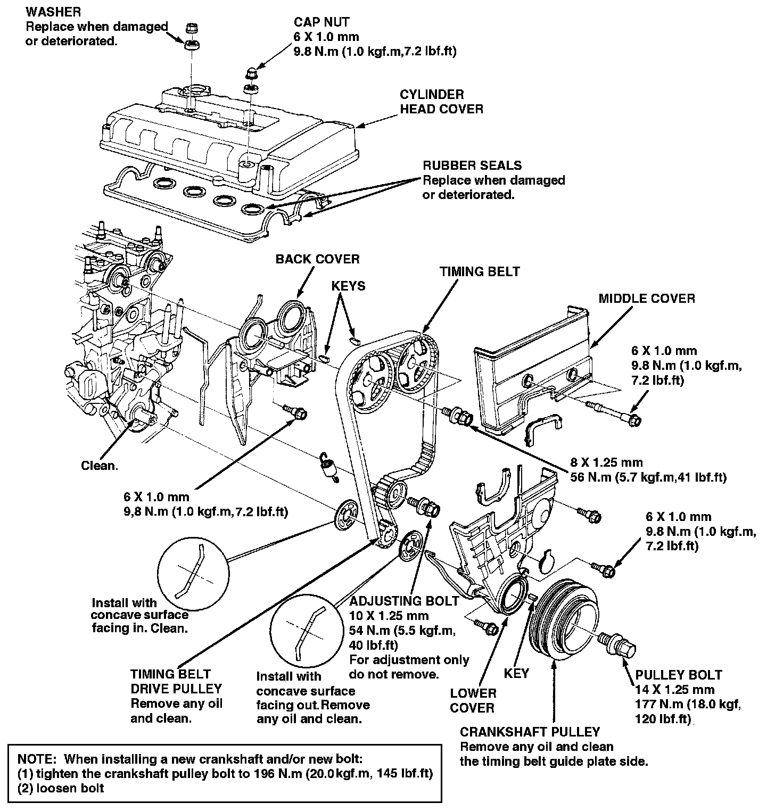
Timing Belt / Removal
NOTE:
- Turn the crankshaft pulley so the No. 1 piston is at top dead center (TDC) before removing the belt.
- Inspect the water pump after removing the timing belt.
1. Remove the wheel well splash shield.
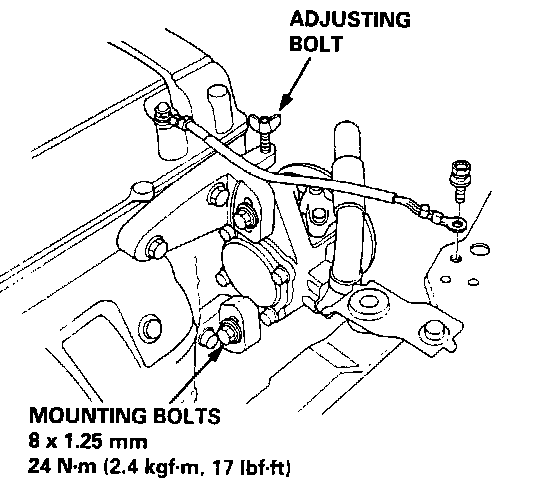
2. Loosen the adjusting bolt and mounting bolts, then remove the power steering (P/S) pump belt.
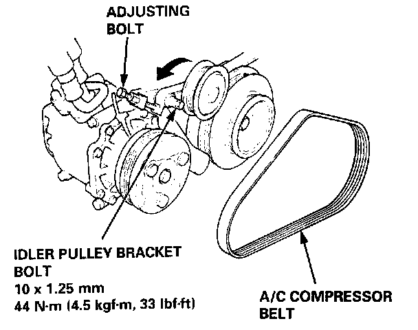
3. Loosen the adjusting bolt and idler pulley bracket bolt, then remove the air conditioning (A/C) compressor belt.
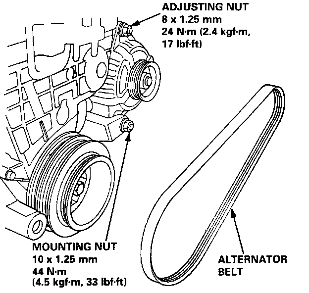
4. Loosen the adjusting nut and mounting nut, then remove the alternator belt.
5. Remove the cruise control actuator.
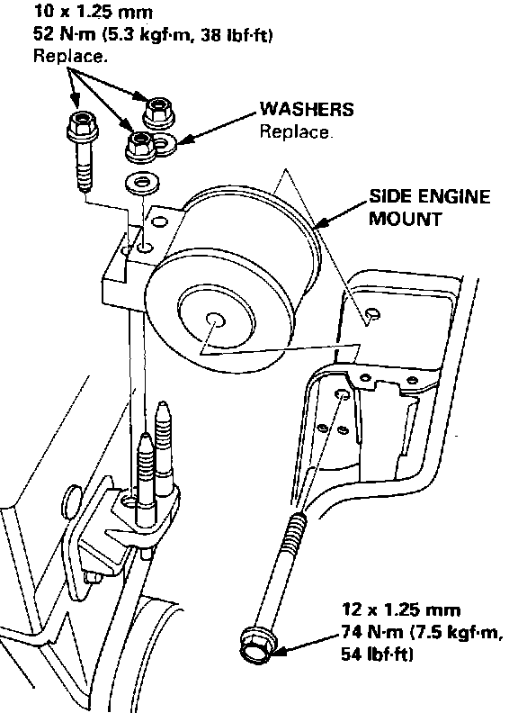
6. Remove the side engine mount.
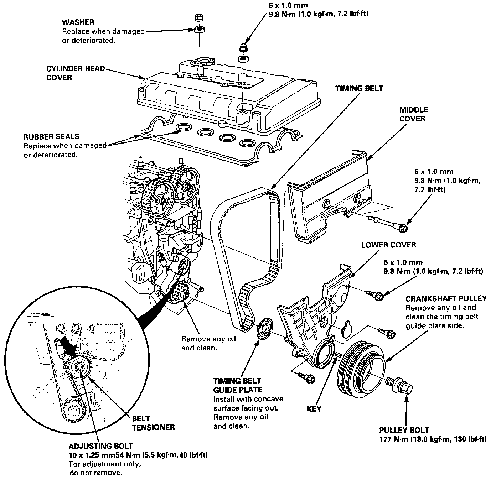
7. Remove the cylinder head cover.
8. Remove the pulley bolt and crankshaft pulley.
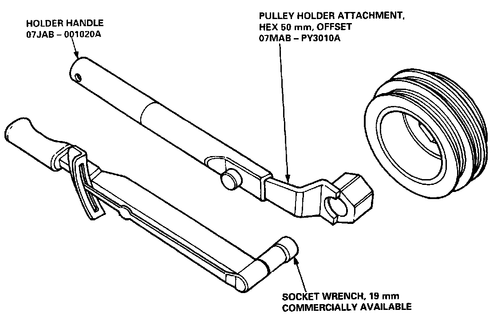
Crankshaft Pulley Bolt / Replacement
NOTE:
- Crankshaft pulley bolt size and torque value:
14 x 1.25 mm
77 N.m (18.0 kgf.m, 130 lbf.ft)
- When installing a new crankshaft and/or new pulley bolt:
(1) tighten the pulley bolt to 196 N.m (20.0 kgf.m, 145 lbf.ft)
(2) loosen the bolt
(3) retighten it to 177 Nm (18.0 kgf.m, 130 lbf.ft).
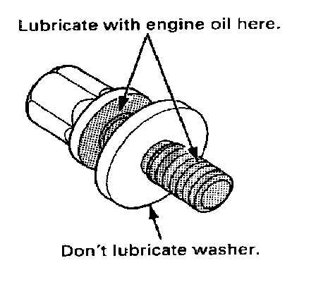
- When installing the bolt, lubricate the threads and flange with engine oil, but don't lubricate the washer and pulley.
9. Remove the middle cover and the lower cover.
NOTE:
- Do not use the middle cover and lower cover for storing removed items.
- Clean the middle cover and lower cover before installation.
10. Loosen the adjusting bolt 180°.
11. Push the tensioner to remove tension from the timing belt, then retighten the bolt.
12. Remove the timing belt from the pulleys.
NOTE: Replace the camshaft and crankshaft seals when oil leakage.
NOTE: Push the tensioner pulley to loosen the belt.
Installation
NOTE:
- Position crankshaft and pulley before installing belt.
- Mark the direction of rotation on the belt before removing.
- Replace the rubber seals if there is oil leakage between the cylinder head and cover.
- Do not use the middle cover and lower cover for storing removed items.
- Clean the middle cover and lower cover before installation.
NOTE: When installing a new crankshaft and/or new bolt:
(1) tighten the crankshaft pulley bolt to 196 N.m (20.0 kg.m, 145 lb.ft)
(2) loosen bolt
(3) retighten it to 177 N.m (18.0 kg.m, 130 lb.ft)
Install the timing belt in the reverse order of removal; Only key points are described here.
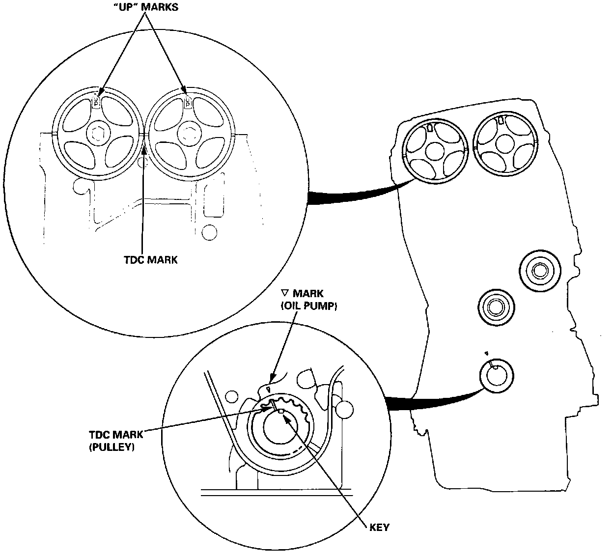
1. Position the crankshaft and the camshaft pulleys as shown before installing the timing belt.
A. Set the crankshaft so that the No.1 piston is at top dead center (TDC). Align the groove on the teeth side of the timing belt drive pulley to the ("arrow mark") pointer on the oil pump.
B. Align the TDC marks on intake and exhaust pulleys.
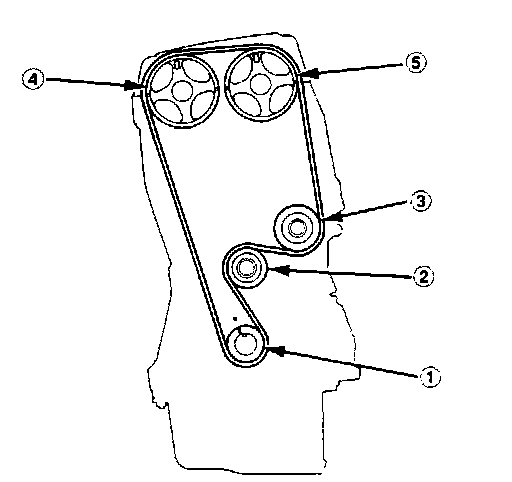
2. Install the timing belt tightly in the sequence shown.
(1) Timing belt drive pulley (crankshaft)
(2) Adjusting pulley
(3) Water pump pulley
(4) Exhaust camshaft pulley
(5) Intake camshaft pulley
3. Loosen and retighten the adjusting bolt to tension the belt.
Crankshaft Pulley:
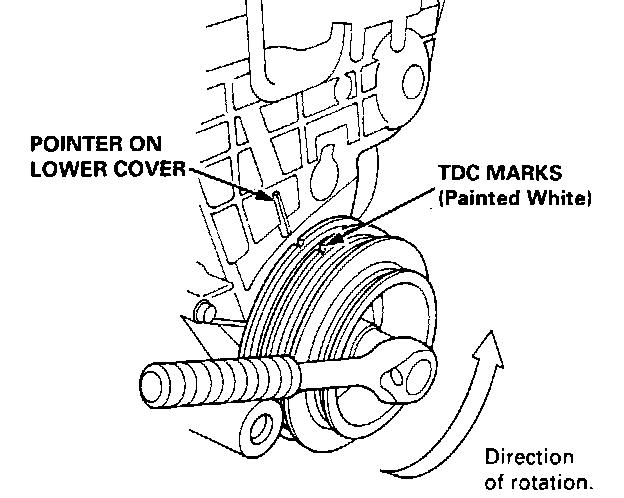
4. Rotate the crankshaft about 4 or 6 turns counterclockwise so that the belt positions on the pulleys.
5. Adjust the timing belt tension.
6. Check the crankshaft pulley and the camshaft pulleys at TDC.
Camshaft Pulley:
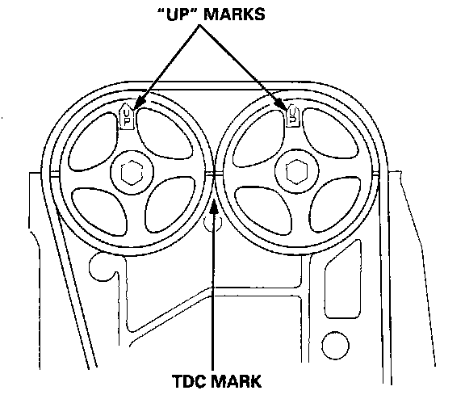
7. If a camshaft pulley is not positioned at TDC, remove the timing belt and adjust the positioning, then reinstall the timing belt.
NOTE: After installation, adjust the tension of each belt.
- Refer to Charging System for alternator belt adjustment.
- Refer to Steering System, for power steering pump belt adjustment.
- Refer to Heating and Air Conditioning, for air conditioning compressor belt adjustment.